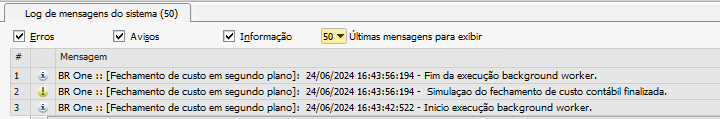

Fechamento de custo em Segundo Plano
O add-on permite realizar o processo de fechamento de custo em segundo plano, possibilitando a utilização do SAP e BR One durante a simulação e processamento do processo. Entretanto, antes de iniciarmos o processo é preciso realizar a configuração das contas e GGF antecipado, na aba “Custos” da tela “Configuração de produção” e criar o “Cadastro de GGF” que será utilizado no processo.
{kind=link}
Simulação do fechamento de custo
Finalizado as configurações, a realização do fechamento de custo em segundo plano, é iniciado na tela “Fechamento de custo contábil”, onde devemos definir o “GGF” que será utilizado no fechamento, após essa definição o usuário deve clicar na “seta” do botão “Simular” e clicar em “1 – Segundo plano”:
{kind=link}
Dessa forma o add-on irá iniciar o processo e retornará uma mensagem do sistema alertando sobre a execução do fechamento em segundo plano:
{kind=link}
BR One :: Fechamento de custo contábil em execução de segundo plano.
Será indicado também o início da execução em segundo plano no Log de mensagens do sistema, segue abaixo exemplo:
{kind=link}
Ao finalizar a execução em segundo plano da simulação do fechamento de custo, o add-on irá retornar novamente uma mensagem do sistema, segue abaixo exemplo:
{kind=link}
BR One :: Execução do fechamento de custo contábil finalizado.
E novamente, será indicado o término da execução em segundo plano no “Log de mensagens do sistema”, segue abaixo exemplo:
{kind=link}
Ao abrir a tela de “Fechamento de custo contábil” e selecionar qualquer GGF pendente de simulação será exibido uma mensagem do sistema, indicando o carregamento da simulação:
{kind=link}
O usuário poderá escolher entre três opções: - Sim: será carregado a simulação do fechamento de custo e retornado em tela. - Não: não será aberto em tela a simulação do fechamento de custo, podendo assim, realizar novamente a simulação para o GGF ou escolher um novo GGF para realizar a simulação do fechamento de custo. - Cancelar: cancela a ação e não seleciona nenhum GGF.
Ao clicar em “Sim”, a o add-on irá abrir uma tela indicando o carregamento da simulação do fechamento de custo:
{kind=link}
O tempo de carregamento varia conforme o tempo da simulação do fechamento, nesse momento, usuário não deve utilizar o SAP e o BR One.
Processamento do fechamento de custo
Após carregar a simulação do fechamento de custo, os valores serão carregados e exibidos em tela nas abas “Resultado” e “LCM e Reavaliações”, para validação dos valores.
Nesse momento será possível processar a simulação do fechamento de custo, para realizar o processo em segundo plano o usuário deve clicar na “seta” do botão “Processar” e clicar em “1 – Segundo plano”:
{kind=link}
Poderá ser exibido a mensagem de sistema abaixo, caso possuam meses anteriores com fechamento em aberto:
{kind=link}
BR One :: Existem GGFs anteriores a este que ainda estão em aberto. Se for feito o processamento para o GGF atual, não será mais possível processar os anteriores. Continuar?
Caso usuário clique em “Não” o processamento será cancelado, caso usuário clique “Sim”, processo irá continuar normalmente, onde será exibido duas mensagens do sistema:
{kind=link}
BR One :: Este processo é irreversível e impossibilitará a realização de lançamentos referentes à produção no período processado. Continuar?
{kind=link}
Para dar sequência no processo usuário deve clicar em “Sim” em ambas. Nesse momento o add-on irá iniciar o processamento em segundo plano, será exibido a mensagem:
{kind=link}
Após será exibido outra mensagem:
{kind=link}
BR One :: Fechamento de custo contábil em execução de segundo plano.
Ao clicar em “Ok”, o add-on permitirá que o usuário utilize normalmente o add-on e após a finalização do processamento, o sistema retornará a seguinte mensagem:
{kind=link}
BR One :: Execução do fechamento de custo contábil finalizado.
Atenção:
Durante os processos de simulação e processamento o usuário poderá utilizar normalmente o SAP e o BR One, e caso o usuário abra a tela de fechamento de custo e selecione um GGF, o add-on irá retornar a seguinte mensagem do sistema, impedindo, que seja iniciado uma nova simulação do fechamento de custo:
{kind=link}
BR One :: Atenção! Uma execução em segundo plano está em curso. Por favor, aguarde até que a execução atual seja concluída.